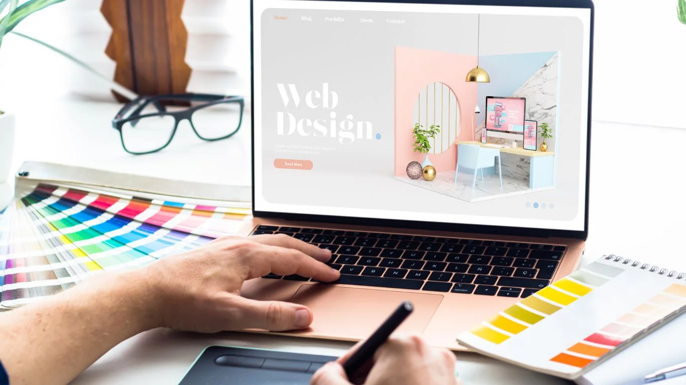

Analyse de votre activité
Nous échangeons sur vos services, vos zones desservies, votre clientèle et votre façon de gérer les demandes et réservations.
Chauffeur VTC
Développez votre clientèle directe et présentez vos services sans dépendre uniquement des plateformes. Central Web Agency crée votre site VTC sur mesure pour mettre en valeur vos prestations, vos véhicules et vos zones desservies, faciliter les demandes de réservation et renforcer l'image professionnelle de votre activité.
Vos défis au quotidien
Entre les plateformes, la concurrence locale et les demandes de dernière minute, développer une clientèle directe n'est pas toujours simple. Votre site vous offre un espace professionnel qui vous appartient pour présenter votre activité et permettre aux voyageurs, entreprises et clients réguliers de vous contacter directement.
Les plateformes peuvent apporter des courses, mais elles ne remplacent pas votre propre présence numérique ni une relation directe avec vos clients.
Sans site structuré, il est plus difficile d'apparaître lorsqu'un client recherche un chauffeur VTC dans votre ville, vers une gare ou un aéroport.
Téléphone, SMS, messages privés et e-mails peuvent compliquer le suivi. Un site permet de centraliser les demandes et, selon le projet, d'automatiser une partie du parcours.
Transferts, gares, aéroports, mise à disposition, événements ou clientèle professionnelle méritent une présentation claire et distincte.
Votre véhicule, votre présentation, vos services et vos avis contribuent à instaurer la confiance avant même la première prise en charge.
Entreprises, hôtels, agences et organisateurs recherchent des prestataires fiables. Un site professionnel renforce votre crédibilité lors d'une prise de contact.
La solution
Un site VTC doit permettre de comprendre immédiatement où vous intervenez, quels transports vous proposez et comment réserver. Il doit inspirer confiance, fonctionner parfaitement sur smartphone et transformer une recherche locale en prise de contact.
Une simple vitrine peut suffire pour présenter votre activité et recevoir des demandes. Si vous souhaitez aller plus loin, un site dynamique peut intégrer un parcours de réservation, des formulaires avancés, une base de données, un espace client ou du paiement selon les besoins définis pour votre projet.
Des pages et contenus adaptés contribuent à votre présence sur les recherches VTC liées à vos villes, gares, aéroports et secteurs desservis.
Votre site devient votre propre point de contact pour les particuliers, entreprises et partenaires qui souhaitent réserver directement avec vous.
Un formulaire ou un système dynamique peut recueillir départ, destination, date, horaire et autres informations utiles à la course.
Vous êtes chauffeur VTC et souhaitez développer vos réservations directes ? Parlons de votre projet.
Demander mon devis gratuitPour tous les professionnels du transport
Chauffeur indépendant ou société disposant de plusieurs véhicules : votre site s'adapte à votre positionnement et aux services que vous souhaitez développer.
Présentez votre activité, votre véhicule, vos secteurs et facilitez les demandes directes de vos clients.
Mettez en avant vos trajets vers les principaux pôles de transport et les secteurs que vous desservez.
Présentez vos prestations à l'heure, à la demi-journée ou à la journée pour les clients qui souhaitent disposer d'un chauffeur.
Valorisez vos services pour dirigeants, collaborateurs, hôtels, agences, séminaires et déplacements professionnels.
Mariages, soirées, salons et événements privés ou professionnels peuvent disposer d'une présentation dédiée.
Présentez plusieurs véhicules, gammes de service ou chauffeurs avec une structure adaptée à une activité plus développée.
Ce que votre site peut faire
Votre site peut être une vitrine efficace ou devenir un véritable outil de réservation. Nous adaptons les fonctionnalités à votre façon de travailler.
Transferts, mise à disposition, événements, longue distance ou clientèle business : chaque prestation peut être expliquée clairement.
Sur un site dynamique, un parcours peut recueillir les informations nécessaires à une demande ou à une réservation selon votre organisation.
Des formulaires avancés peuvent recueillir les adresses, horaires, nombre de passagers et informations utiles au trajet.
Selon le projet, un site dynamique peut intégrer un paiement ou un acompte dans le parcours de réservation.
Photos, capacité, gamme et équipements permettent aux clients de découvrir le niveau de service proposé.
Présentez vos villes, gares, aéroports et principales zones d'intervention pour rendre votre offre immédiatement compréhensible.
Les témoignages et liens vers vos avis contribuent à rassurer les nouveaux clients avant leur première réservation.
Une présentation dédiée peut mettre en avant vos solutions pour entreprises, hôtels, agences et partenaires professionnels.
Dans un projet dynamique plus avancé, un espace client peut être étudié selon les fonctionnalités nécessaires.
Un site administrable peut vous permettre de gérer certains contenus et données selon le périmètre défini au projet.
Vos clients peuvent consulter vos services et vous contacter facilement depuis leur smartphone, souvent utilisé pendant leurs déplacements.
Structure, balises et contenus apportent de bonnes bases pour votre visibilité sur les recherches VTC liées à votre secteur.
Vous hésitez entre un simple formulaire et une réservation plus avancée ? Nous vous conseillons gratuitement.
Être conseillé gratuitementQuelle solution pour vous
Un site vitrine est idéal pour présenter vos services et recevoir des demandes. Un site dynamique devient pertinent lorsque vous souhaitez intégrer réservation, paiement, espace client, administration ou autres fonctionnalités avancées.
| Critère | Site vitrine | Site dynamique |
|---|---|---|
| Idéal pour | Visibilité & demandes directes | Réservation & fonctionnalités avancées |
| Présentation de vos services | ||
| Véhicules & zones desservies | ||
| Formulaire de demande | ||
| Réservation avancée | ||
| Paiement en ligne | ||
| Base de données & administration | ||
| Tarif de création | À partir de 450€ TTC | À partir de 2 500€ TTC |
| Abonnement obligatoire | Non | Non |
| Maintenance optionnelle | À partir de 39€/mois | À partir de 99€/mois |
| Délai indicatif | 1 à 3 semaines | Selon les fonctionnalités |
Quelle que soit la solution choisie, aucun abonnement n'est obligatoire. Le site vitrine démarre à 450€ TTC. Le site dynamique et administrable démarre à 2 500€ TTC. La maintenance reste entièrement optionnelle : 39€/mois pour un site vitrine et 99€/mois pour un site dynamique.
Un doute sur la formule à choisir ? Nous analysons vos besoins et vous orientons sans engagement.
Demander conseilNotre processus
De l'analyse de votre activité VTC à la mise en ligne, vous validez les choix importants. Simple, clair et sans mauvaise surprise.
Nous échangeons sur vos services, vos zones desservies, votre clientèle et votre façon de gérer les demandes et réservations.

Nous concevons une interface professionnelle cohérente avec votre image, puis vous validez la maquette avant le développement.
Nous développons votre site et intégrons vos services, véhicules, zones d'intervention et les fonctionnalités prévues.
Nous contrôlons le fonctionnement sur les différents écrans, puis nous publions votre site et organisons sa prise en main si nécessaire.
Nos tarifs
Site vitrine pour présenter vos services ou site dynamique pour intégrer des fonctionnalités avancées : dans les deux cas, aucun abonnement n'est obligatoire.
Prix TTC — TVA non applicable, art. 293B du CGI
Site vitrine
Une présence professionnelle pour présenter vos services VTC et générer des demandes directes. Paiement unique et aucun abonnement obligatoire.
Site dynamique & administrable
Une solution avec base de données et fonctionnalités avancées conçues autour de votre activité. Paiement unique et aucun abonnement obligatoire.
La maintenance est facultative.
Si vous souhaitez nous confier l'hébergement, la maintenance, les mises à jour et l'accompagnement, nos formules débutent à 39€/mois pour un site vitrine et 99€/mois pour un site dynamique. Vous restez libre de choisir cette option ou non.
Notre différence
Votre site doit refléter le sérieux et la qualité de service que vous offrez à bord. Nous construisons une présence numérique sur mesure autour de votre activité, de votre clientèle et de vos objectifs.
Nous prenons le temps de comprendre votre activité et votre organisation avant de construire la solution.
Votre site reflète votre image, vos véhicules, vos prestations et votre positionnement.
Structure technique, balises et contenus sont travaillés pour fournir de bonnes bases de référencement.
Votre site reste simple à utiliser sur smartphone, tablette et ordinateur.
Votre site clé en main vous appartient, sans abonnement de maintenance imposé.
Selon sa conception, votre site peut évoluer avec votre activité et accueillir de nouveaux outils.
Après la livraison, nous restons joignables pour vous accompagner selon les modalités prévues.
FAQ
Une question sur votre futur site, nos tarifs ou le déroulement du projet ?
Poser ma questionUn site vitrine clé en main démarre à partir de 450€ TTC. Un site dynamique et administrable avec base de données et fonctionnalités avancées démarre à partir de 2 500€ TTC. Dans les deux cas, aucun abonnement n'est obligatoire.
Un site vitrine est généralement livré entre 1 et 3 semaines. Pour un site dynamique, le délai dépend des fonctionnalités et vous est précisé dans le devis avant le démarrage.
Oui. Un site dynamique peut intégrer un parcours de réservation adapté à votre organisation et recueillir les informations nécessaires au trajet.
Oui. Votre site peut présenter vos principales zones d'intervention, villes, gares et aéroports afin que les visiteurs comprennent rapidement où vous travaillez.
Oui, dans le cadre d'un site dynamique adapté. Selon votre projet, un paiement ou un acompte peut être intégré au parcours de réservation.
Oui. Votre site peut présenter un ou plusieurs véhicules avec photos, capacité, gamme et équipements. Une gestion plus avancée peut également être étudiée sur un site dynamique.
Un site vitrine suffit si vous souhaitez présenter vos services et recevoir des demandes. Un site dynamique devient utile pour intégrer réservation, paiement, espace client, base de données ou administration avancée.
Oui. Votre site clé en main vous appartient, qu'il s'agisse d'un site vitrine ou d'un site dynamique. Aucun abonnement n'est obligatoire : les formules de maintenance restent entièrement optionnelles.
Oui. Central Web Agency est basée à Heyrieux, près de Lyon, et peut accompagner des chauffeurs et sociétés VTC partout en France grâce à un suivi réalisable à distance.
Vous bénéficiez de 30 jours de retouches offertes sur le périmètre validé. Ensuite, vous pouvez gérer votre site selon les modalités prévues au projet ou choisir une maintenance optionnelle : à partir de 39€ par mois pour un site vitrine et 99€ par mois pour un site dynamique.
Oui. Votre site vous donne un point de contact qui vous appartient pour présenter votre activité et recevoir des demandes directement. Il peut compléter les plateformes et vos autres canaux d'acquisition.
La création du site est proposée en paiement unique : à partir de 450€ TTC pour un site vitrine et de 2 500€ TTC pour un site dynamique. Aucun abonnement n'est obligatoire. La maintenance est proposée en option à partir de 39€ par mois pour un site vitrine et 99€ par mois pour un site dynamique.
Prêt à développer votre clientèle directe ?
Une image professionnelle, des services clairement présentés et des demandes de réservation facilitées. Donnez à votre activité VTC une présence en ligne qui vous appartient. Devis gratuit et sans engagement sous 24h.
Vous préférez écrire ? Utilisez le formulaire de contact, nous vous répondons rapidement.